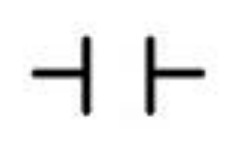
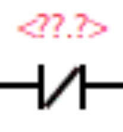
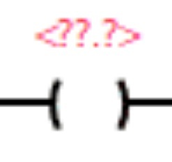

TIA Portal V20 - Passo a Passo
Passo 01
É um software de engenharia de automação industrial desenvolvido pela Siemens que integra diversas ferramentas em um único ambiente. Ele é utilizado para programar Controladores Lógicos Programáveis (CLPs) em linguagens como o Ladder, criar telas de operação (IHM), configurar redes industriais e simular o funcionamento lógico do código antes de sua aplicação em equipamentos reais.
Contato NA em Ladder

O Contato NA (Normalmente Aberto) — ou NO (Normally Open) — funciona como um interruptor onde, enquanto em repouso (Desativado - 0) impede a passagem de corrente; e ao ser acionado (Ativado) ele fecha o contato, permitindo assim a passagem da corrente. Sendo que para voltar a seu estado de repouso (Desativado - 0), o sinal de acionamento deve ser removido.
Seu respectivo símbolo é: -| |-
Contato NF em Ladder

O Contato NF (Normalmente Fechado) — ou NC (Normally Closed) — é o oposto do Contato NA, pois funciona como um interruptor onde, enquanto em repouso (Desativado - 0) permite a passagem de corrente; e ao ser acionado (Ativado) ele abre o contato, impedindo assim a passagem da corrente. Sendo que para voltar a seu estado de repouso (Desativado - 0), o sinal de acionamento deve ser removido.
Seu respectivo símbolo é: -| / |-
Bobina em Ladder

É a instrução de saída padrão na linguagem Ladder. Quando há continuidade lógica (passagem de corrente) por toda a linha de contatos que a antecede, a bobina é ativada. Assim que essa continuidade é interrompida, ela retorna imediatamente ao seu estado de repouso (Desativado - 0).
Seu respectivo símbolo é: -( )-
Bobina Set em Ladder

É uma instrução de saída que, ao receber um pulso lógico ativo, ativa seu endereço e o mantém retido ("travado" em 1). Mesmo que o contato de entrada volte para o estado de repouso, a bobina permanece ligada até receber um comando de Reset.
Seu respectivo símbolo é: -( S )-
Bobina Reset em Ladder
É a instrução utilizada em conjunto com a Bobina Set. Ao ser acionada, ela quebra a retenção da memória e força o endereço de volta ao seu estado de repouso (Desativado - 0).
Seu respectivo símbolo é: -( R )-
TON (Timer On Delay - Atraso na Energização) em Ladder
É um temporizador utilizado para esperar um número definido de segundos, milissegundos, etc... após ser energizado para permitir a passagem de energia após o Contato NA ser acionado ou NF ser mantido em seu estado.
TOF (Timer Off Delay - Atraso na Desenergização) em Ladder
É o oposto do TON, pois é um temporizador utilizado para esperar um número definido de segundos, milissegundos, etc... após ser desenergizado para impedir a passagem de energia após o Contato NA ser desativado ou NF ser acionado.
TP (Timer Pulse - Temporizador de Pulso) em Ladder
É um temporizador utilizado para gerar uma saída ativa por um período de tempo predefinido exato. Assim que recebe um pulso na entrada, a sua saída é ligada e o tempo começa a contar, permanecendo ativa mesmo que o sinal de entrada seja desativado antes do tempo terminar. Após o fim do tempo programado, a saída desliga automaticamente.
CTU (Count Up - Contador Crescente) em Ladder
É uma instrução de contagem utilizada para incrementar (somar) uma unidade ao seu valor acumulado interno toda vez que a sua entrada de contagem recebe uma transição de sinal (borda de subida). Quando o valor acumulado atingir o valor limite predefinido, sua saída lógica é ligada, permanecendo assim até que a entrada de Reset seja acionada para zerar o contador.
CTD (Count Down - Contador Decrescente) em Ladder
É uma instrução de contagem utilizada para decrementar (subtrair) uma unidade de seu valor acumulado interno a cada transição de sinal em sua entrada de contagem. É frequentemente associado ao carregamento de um valor inicial e realiza a contagem regressiva em direção a zero ou ao limite configurado para ativar sua saída lógica.
Endereçamentos de Entrada em Ladder (I0.0, I1.0, etc...)
Representam as entradas físicas (Inputs) do CLP mapeadas dentro do programa Ladder. São os endereços que recebem os sinais elétricos diretos de botões e sensores externos quando acionados em campo.
Endereçamentos de Saída em Ladder (Q0.0, Q1.0, etc...)
Representam as saídas físicas (Outputs) do CLP no programa Ladder. São as instruções responsáveis por comandar os atuadores reais conectados ao CLP, tais como motores, lâmpadas e contatores.
Endereçamentos de Memória em Ladder (M10.0, M11.0, etc...)
São bits de memória interna conhecidos como marcadores virtuais dentro da lógica Ladder. Funcionam como contatos ou bobinas internas para armazenar estados e ajudar no sequenciamento do código, sem necessitar de uma saída física direta.